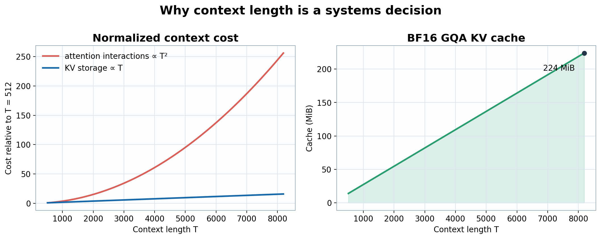
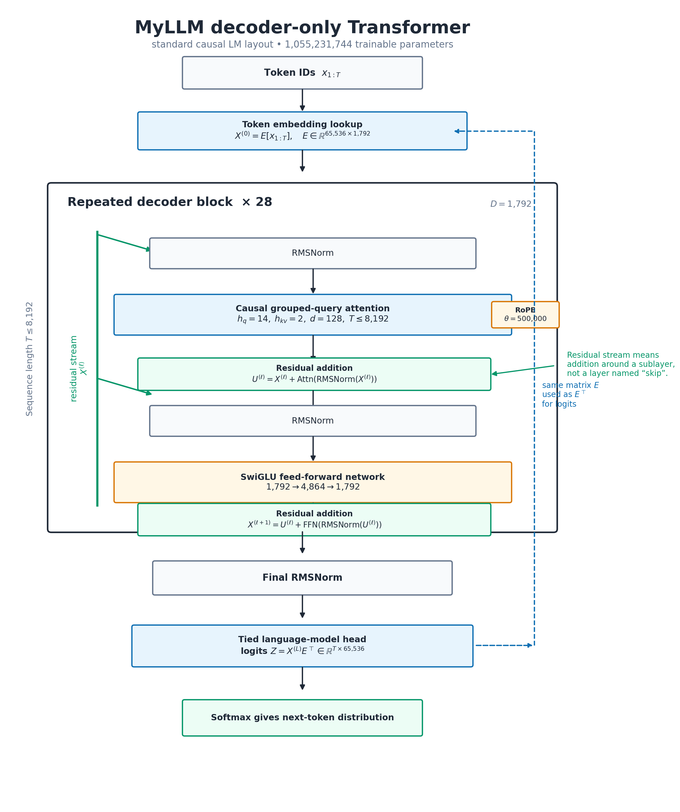
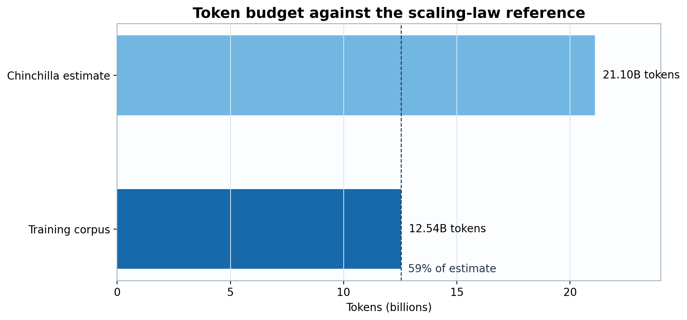

Before a model can learn a sentence, we have to decide what counts as a piece of that sentence, how much text the model may look at at once, and how much capacity it has for patterns. These decisions sound like setup, but they define the problem. A model trained on mathematical writing sees a different world from one trained on conversations; a model with a short context may understand every line of a proof yet lose the beginning before reaching the end.
Parameters are not tiny drawers containing facts. They are adjustable numbers that collectively shape how token patterns are transformed. Choosing one billion of them without choosing their arrangement would be like ordering a million bricks without deciding whether we are building a bridge or a very ambitious garden wall.
This section defines notation only. It does not assume a model size or assign numerical values. Section 6 begins with the separate design assumption \(N\approx10^9\), derives the tensor shapes and dimensions, and presents the final configuration only after the derivation.
| Symbol | General definition |
|---|---|
| \(N\) | Total number of trainable scalar parameters. |
| \(V\) | Number of entries in the tokenizer vocabulary. |
| \(B\) | Number of independent token sequences in one global batch. |
| \(T\) | Number of token positions in a sequence or current context. |
| \(L\) | Number of repeated decoder blocks. |
| \(D\) | Hidden dimension of the residual stream. |
| \(D_{ff}\) | Intermediate dimension of the feed-forward network. |
| \(h_q,h_{kv}\) | Query-head and key/value-head counts. Grouped-query attention has \(h_{kv}<h_q\). |
| \(d\) | Dimension per attention head. When queries span the residual width, \(D=h_qd\). |
| \(x_t\) | Token ID at position \(t\), with \(x_t\in\{0,\ldots,V-1\}\). |
| \(E\) | Token-embedding matrix, \(E\in\mathbb{R}^{V\times D}\). |
| \(X^{(\ell)}\) | Hidden states entering block \(\ell\), with \(X^{(\ell)}\in\mathbb{R}^{B\times T\times D}\). |
| \(Q,K,V_a\) | Query, key, and attention-value tensors. \(Q\in\mathbb{R}^{B\times h_q\times T\times d}\), while \(K,V_a\in\mathbb{R}^{B\times h_{kv}\times T\times d}\). |
| \(W_Q,W_K,W_V,W_O\) | Learned query, key, value, and attention-output projection matrices. |
| \(M\) | Causal mask, with \(M_{tu}=0\) for \(u\le t\) and \(M_{tu}=-\infty\) for \(u>t\). |
| \(A\) | Attention probabilities after masked softmax, \(A\in\mathbb{R}^{B\times h_q\times T\times T}\). |
| \(W_g,W_u,W_d\) | SwiGLU gate, up, and down projections, mapping \(D\to D_{ff}\to D\). |
| \(z_t\) | Unnormalized next-token scores, with \(z_t\in\mathbb{R}^{V}\). |
| \(p_t\) | Next-token probabilities, with \(p_t\in[0,1]^V\) and \(\sum_jp_{t,j}=1\). |
| \(y_t\) | Correct next-token target, usually \(y_t=x_{t+1}\). |
| \(y\) | Generated response sequence in fine-tuning objectives; \(y^+\) and \(y^-\) denote preferred and rejected responses. |
| \(\mathcal L\) | Scalar objective averaged over valid target tokens. |
| \(\theta\) | Collection of all trainable parameters; \(\theta\) contains \(N\) scalar values. |
| \(\eta_t\) | Learning rate at optimizer update \(t\). |
| \(s\) | Bytes per stored scalar element. BF16 uses \(s=2\). |
| Symbol | Meaning |
|---|---|
| \(N_{\mathrm{valid}}\) | Unmasked target tokens contributing to a loss. |
| \(g_t,m_t,v_t\) | Gradient and AdamW moment estimates at update \(t\). |
| \(\beta_1,\beta_2\) | AdamW exponential-decay coefficients. |
| \(\lambda\) | Decoupled weight-decay coefficient. |
| \(c\) | Global gradient-clipping threshold. |
| \(W\) | Number of data-parallel workers. |
| \(B_{\mu}\) | Micro-batch size per worker. |
| \(a\) | Gradient-accumulation steps, so \(B=B_{\mu}Wa\). |
| \(s_w,s_g,s_m\) | Bytes per weight, gradient, and optimizer-state scalar. |
| \(k\) | Number of optimizer-state tensors stored per parameter. |
| \(M_{\mathrm{train}},M_{\mathrm{act}},M_{\mathrm{workspace}}\) | Total training memory, saved-activation memory, and temporary kernel-workspace memory. |
| \(V_{\mathrm{comm}}\) | Communication volume transferred by a distributed collective. |
| \(n_{\mathrm{grp}}\) | Completions sampled for one GRPO prompt. |
| \(R_i\) | Verifier reward for completion \(i\). |
| \(\mu_R,\sigma_R\) | Within-group reward mean and standard deviation. |
| \(A_i\) | Group-normalized advantage. |
| \(p_\theta,p_{\mathrm{old}},p_{\mathrm{ref}}\) | Trainable language-model distribution, sampling distribution, and frozen reference distribution. |
| \(\rho_{i,t}\) | Token-level probability ratio between updated and sampling policies. |
| \(\epsilon_{\mathrm{clip}}\) | Policy-ratio clipping radius. |
| \(\beta_{\mathrm{DPO}}\) | DPO preference scale. |
| \(D_{\mathrm{KL}}\) | Kullback-Leibler divergence. |
| \(\lambda_{\mathrm{KL}}\) | Coefficient multiplying the KL-divergence penalty. |
| \(T_0,T_q\) | Initial prompt length and current query length. |
| \(G_{\mathrm{dec}}\) | Newly generated decode tokens. |
| \(M_{KV}\) | Key/value-cache memory. |
| \(\varepsilon_{\mathrm{norm}}\) | Small RMSNorm stability constant. |
| \(\varepsilon_{\mathrm{opt}}\) | Small AdamW denominator constant. |
| \(\varepsilon_R\) | Small GRPO advantage-normalization constant. |
| \(\theta_{\mathrm{rope}}\) | RoPE frequency base; distinct from trainable parameters \(\theta\). |
| Symbol | Meaning |
|---|---|
| \(N_{\mathrm{embed}}\) | Parameters in the tied token-embedding matrix. |
| \(N_{\mathrm{attn}}\) | Parameters in one block's query, key, value, and output projections. |
| \(N_{\mathrm{ffn}}\) | Parameters in one block's SwiGLU projections. |
| \(N_{\mathrm{block}}\) | Total parameters in one decoder block, including its two RMSNorm vectors. |
| \(N(L)\) | Total model parameters as a function of integer depth \(L\). |
A model learns statistical regularities from examples, so the corpus is its experience rather than a neutral input file. For mathematical language, we want prose, notation, definitions, derivations, and explanations, not merely isolated equations. OpenWebMath provides that mixture in web-scale mathematical text downloaded as parquet shards and streamed during preparation.
After the purpose is clear, scale becomes meaningful: 6,315,233 documents contain 48.93 GB of raw text and become 12,540,116,992 tokens, or 1,530,776 full sequences. Compact unsigned 16-bit token IDs occupy about 25.08 GB.
Let the cleaned corpus be \(\mathcal C=\{d_i\}_{i=1}^{n}\), with \(n=6{,}315{,}233\). Tokenization maps each document to a finite sequence,
\[\tau(d_i)=(x_{i,1},\ldots,x_{i,T_i}),\qquad x_{i,t}\in\{0,\ldots,V-1\}.\]
Training does not optimize an expectation over the unknown distribution of all mathematical writing directly. It minimizes empirical risk over windows sampled from the finite tokenized corpus. If \(w\) denotes one length-\(T\) window and \(\widehat{\mathcal D}\) the sampling distribution induced by sharding, shuffling, and packing, then
\[\widehat{R}(\theta)=\mathbb E_{w\sim\widehat{\mathcal D}}\left[\frac{1}{T-1}\sum_{t=1}^{T-1}-\log p_\theta(w_{t+1}\mid w_{1:t})\right].\]
This distinction matters: corpus filtering changes \(\widehat{\mathcal D}\), and therefore changes the function being optimized even when architecture and optimizer remain fixed.
After tokenization, the corpus contains \(n_{\mathrm{tok}}=12{,}540{,}116{,}992\) token IDs. With fixed windows of \(T=8{,}192\), the exact packed count is
\[n_{\mathrm{seq}}=\frac{n_{\mathrm{tok}}}{T}=\frac{12{,}540{,}116{,}992}{8{,}192}=1{,}530{,}776.\]
Because \(V=65{,}536=2^{16}\), every token ID fits exactly in one unsigned 16-bit integer. The payload size is therefore
\[12{,}540{,}116{,}992\times2=25{,}080{,}233{,}984\text{ bytes}\approx25.08\text{ GB}.\]
Context length sets the maximum number of tokens that participate in one forward pass. Increasing it preserves longer documents and dependencies, but exact self-attention forms pairwise query-key interactions. Attention computation therefore grows as \(O(T^2D)\), naive score-tensor memory grows as \(O(T^2)\), and KV-cache memory grows linearly as \(O(Lh_{kv}dTs)\).
For example, we can choose \(T=8{,}192\) to retain long mathematical derivations. A shorter context reduces activation memory, HBM traffic, and attention FLOPs, but increases document splitting and truncation.

Figure 1. Increasing context from 512 to 8,192 multiplies pairwise attention interactions by \(256\), while GQA KV storage grows by \(16\) to 224 MiB.
Neural networks receive numbers, not words. A tokenizer decides whether “unbelievable” is one unit, several familiar pieces, or a collection of bytes. Whole-word vocabularies fail on unseen words; individual bytes never fail, but produce long sequences. Byte-level BPE starts with universal byte coverage and learns useful merges.
A standalone byte-level BPE can be trained on 500,000,000 characters. The non-control BPE vocabulary has 65,520 entries, and reserved/control IDs bring \(V\) to 65,536. The table below lists the control IDs used in the article; additional reserved IDs may be kept for compatibility or future formatting.
A tokenizer is an encoder-decoder pair \((\tau,\tau^{-1})\). For valid byte strings \(s\), lossless tokenization requires
\[\tau^{-1}(\tau(s))=s.\]
Byte-level initialization guarantees representability because every UTF-8 string is a byte sequence and every byte is in the base alphabet. BPE then introduces merges that reduce expected sequence length under the tokenizer-training distribution. If \(|\tau(s)|\) is the encoded length, the compression objective is informally to reduce \(\mathbb E[|\tau(s)|]\) subject to a fixed vocabulary budget and exact decodability.
The vocabulary-size tradeoff is coupled to the model. A larger \(V\) can shorten sequences, but increases tied embedding parameters by \(D\) for every new token. A smaller \(V\) saves embedding parameters but increases \(T\), attention work, and the number of autoregressive decisions needed to represent the same text.
| Token | ID |
|---|---|
| pad / bos / eos / unk | 0 / 1 / 2 / 3 |
| <|system|> | 65,520 |
| <|user|> | 65,521 |
| <|assistant|> | 65,522 |
| <|end|> | 65,523 |
Suppose we first fix the model class: MyLLM should contain approximately one billion trainable parameters. “Approximately” matters because layer count, head count, and matrix dimensions are integers. A practical design band of roughly \(1.0\)–\(1.1\) billion parameters lets us choose hardware-friendly dimensions and then compute the exact total.
The budget is not divided uniformly. The vocabulary determines a large embedding matrix; every decoder block contains attention and feed-forward projections; depth repeats those block parameters. We therefore choose dimensions in dependency order rather than guessing the completed configuration.
The tokenizer establishes \(V=65{,}536\). Once hidden width \(D\) is selected, the input embedding contains
\[N_{\mathrm{embed}}=VD.\]
The output language-model head would normally add another \(VD\) parameters. Tying its weight to the input embedding removes that duplicate matrix. For \(D=1{,}792\),
\[N_{\mathrm{embed}}=65{,}536\times1{,}792=117{,}440{,}512.\]
Thus the vocabulary alone consumes about 117.4 million parameters before a single decoder block is added. This is one reason vocabulary size and model width cannot be chosen independently of the total budget.
A common accelerator-friendly head dimension is \(d=128\): it is large enough to provide a useful query/key subspace and aligns cleanly with tensor-core matrix tiles. Hidden width must satisfy
\[D=h_qd.\]
Choosing \(h_q=14\) query heads gives
\[D=14\times128=1{,}792.\]
Width has a quadratic effect on most projection parameters, so increasing \(D\) is much more expensive than adding a small number of layers. The value 1,792 provides fourteen independent query subspaces while keeping the block cost compatible with the one-billion-parameter band.
Ordinary multi-head attention would use \(h_{kv}=h_q=14\). MyLLM instead chooses \(h_{kv}=2\), so each KV head is shared by seven query heads. The bias-free attention projections contain
\[N_{\mathrm{attn}}=D(h_qd)+D(h_{kv}d)+D(h_{kv}d)+(h_qd)D.\]
Because \(h_qd=D\), this becomes
\[N_{\mathrm{attn}}=2D^2+2Dh_{kv}d=7{,}340{,}032.\]
GQA reduces both key/value projection parameters and inference KV-cache memory. Relative to fourteen KV heads, two KV heads reduce cache storage by \(14/2=7\) while retaining fourteen query heads.
A SwiGLU block has gate, up, and down matrices. With no bias terms, its parameter count is
\[N_{\mathrm{ffn}}=DD_{ff}+DD_{ff}+D_{ff}D=3DD_{ff}.\]
Choosing \(D_{ff}=4{,}864\) gives
\[N_{\mathrm{ffn}}=3(1{,}792)(4{,}864)=26{,}148{,}864.\]
The ratio is \(D_{ff}/D\approx2.714\). SwiGLU uses three matrices, so this width gives substantial nonlinear capacity without paying the parameter cost of applying a conventional \(4D\) intermediate width to all three projections.
Each pre-normalized block also contains two RMSNorm scale vectors, contributing \(2D=3{,}584\) parameters. Therefore,
\[\begin{aligned}N_{\mathrm{block}}&=N_{\mathrm{attn}}+N_{\mathrm{ffn}}+2D\\&=7{,}340{,}032+26{,}148{,}864+3{,}584\\&=33{,}492{,}480.\end{aligned}\]
The feed-forward network accounts for most parameters in each block. Attention is nevertheless the sequence-mixing operation and becomes the dominant context-dependent cost as \(T\) grows.
After embeddings and the final RMSNorm vector are included, the total is
\[N(L)=VD+L\,N_{\mathrm{block}}+D.\]
Nearby integer depths give
| Decoder blocks \(L\) | Exact parameters |
|---|---|
| 27 | 1,021,739,264 |
| 28 | 1,055,231,744 |
| 29 | 1,088,724,224 |
All three values belong to the approximate one-billion class. Choosing \(L=28\) places MyLLM near the center of the 1.0–1.1B design band and allocates 937,789,440 parameters to repeated decoder blocks. The exact total follows:
\[117{,}440{,}512+28(33{,}492{,}480)+1{,}792=1{,}055{,}231{,}744.\]
RoPE introduces position-dependent rotations without a learned position-embedding table. The base \(\theta_{\mathrm{rope}}=500{,}000\) distributes rotation frequencies over the 8,192-token context. RMSNorm uses learned scale vectors already counted above, with \(\varepsilon_{\mathrm{norm}}=10^{-5}\) for numerical stability. Pre-normalization and residual connections support stable signal and gradient propagation across 28 blocks.
The table is now a summary of the preceding constraints and arithmetic rather than a list of unexplained constants.
| Model-card field | MyLLM value | Reason |
|---|---|---|
| Total parameters | 1,055,231,744 | Falls inside the chosen 1.0–1.1B design band. |
| Vocabulary | 65,536 | 65,520 non-control byte-BPE entries plus reserved/control IDs. |
| Hidden size | 1,792 | Exactly \(14\times128\), matching query-head decomposition. |
| Depth | 28 decoder blocks | Uses 937,789,440 block parameters while remaining near the middle of the target band. |
| Attention | 14 query heads; 2 KV heads; head dimension 128 | Fourteen query subspaces with a sevenfold KV-cache reduction relative to fourteen KV heads. |
| Feed-forward width | 4,864 | SwiGLU ratio \(D_{ff}/D\approx2.714\) contributes 26,148,864 parameters per block. |
| Position | RoPE; \(\theta_{\mathrm{rope}}=500{,}000\) | Position-dependent query/key rotations without a learned position table. |
| Normalization | RMSNorm; \(\varepsilon_{\mathrm{norm}}=10^{-5}\) | Pre-normalized residual blocks with numerically stable scale normalization. |
| Embedding tie | Enabled | Avoids a second 117,440,512-parameter vocabulary matrix. |

Figure 2. The resulting pre-normalized decoder architecture. The 28-block stack alternates grouped-query causal attention and a SwiGLU feed-forward network; the token embedding and language-model head share weights.
Read the figure from top to bottom. Token IDs \(x_{1:T}\) are first converted into residual-stream vectors \(X^{(0)}\) by the embedding lookup \(E[x_{1:T}]\). The embedding matrix is not the first decoder layer; it is the interface from discrete tokens into the continuous hidden space.
Inside each repeated decoder block, the model uses a pre-normalized residual form. If \(X^{(\ell)}\) is the block input, attention first receives \(\mathrm{RMSNorm}(X^{(\ell)})\), and its output is added back to the original residual stream:
\[U^{(\ell)}=X^{(\ell)}+\mathrm{Attn}(\mathrm{RMSNorm}(X^{(\ell)})).\]
The feed-forward network then receives \(\mathrm{RMSNorm}(U^{(\ell)})\), and its output is again added to the residual stream:
\[X^{(\ell+1)}=U^{(\ell)}+\mathrm{FFN}(\mathrm{RMSNorm}(U^{(\ell)})).\]
The green arrows therefore mean residual additions. They are sometimes casually called skip connections, but the precise object is the residual stream: a \(D=1{,}792\)-dimensional vector path that carries information through all 28 blocks while each sublayer adds a learned update.
After the 28th block, a final RMSNorm is applied and the language-model head maps hidden states to vocabulary logits. Weight tying means the same matrix \(E\) used for input embeddings is reused as \(E^\top\) in the output head. This tied head is outside the decoder-block stack; it is not the last decoder layer.
The compute-optimal analysis of Hoffmann et al. gives a useful rule of thumb of approximately 20 training tokens per parameter [2]:
\[1.055\times10^9\times20\approx21.1\times10^9\text{ tokens}.\]
Where does the comparison value \(12.5\times10^9\) come from? OpenWebMath supplies 6,315,233 mathematical web documents [1]. After those documents are encoded with MyLLM's byte-level BPE tokenizer, they contain exactly 12,540,116,992 tokens. Token counts are tokenizer-dependent: the OpenWebMath paper reports 14.7B tokens under its own tokenization, while \(12.54\)B is the count that determines the number of MyLLM training sequences and optimizer steps.
We can therefore compare the available corpus with the scaling-law target:
\[\frac{12.540\times10^9}{21.105\times10^9}\approx0.594.\]
The corpus supplies about 59% of the compute-optimal token estimate, so this configuration is undertrained relative to that rule of thumb. A deployment-focused design can instead train beyond the compute-optimal point because additional one-time training may improve the capability of a smaller, less expensive inference model.

Figure 3. Tokenizing OpenWebMath with MyLLM's tokenizer yields 12.54B tokens, approximately 59% of the 21.10B-token scaling-law reference.